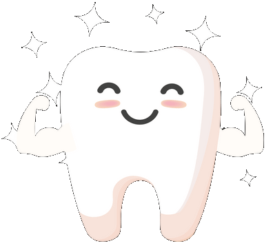

Profissionais qualificados e prontos para proporcionar o melhor sorriso.
Tratamentos disponibilizados:
-
Aparelho Ortodôntico
São usados para a correção de mordidas tortas, desalinhadas, dentes apinhados e desajustados na arcada. Se você deseja ter um sorriso alinhado e uma qualidade de vida melhor evitando dores e aumentando a estética, pode ser uma excelente opção.
-
Tratamento Endodôntico
Conhecido como canal, consiste na remoção da polpa (nervo) do dente. O espaço que fica deve ser limpo, preparado e preenchido.
-
Clareamento
Procedimento estético que proporciona ao paciente uma satisfação com seu sorriso. Para melhores resultados, deve ser realizada uma avaliação individual de cada paciente. Sonha em ter dentes brancos? Essa é uma ótima opção para você.
-
Harmonização Facial
São procedimentos estéticos, que melhoram a harmonia do rosto, tratando o envelhecimento facial e transformando os traços. Esses procedimentos podem ser feitos em homens e mulheres que desejam modificar, prevenir, rejuvenescer e melhorar o visual. As áreas a serem tratadas variam com a fisionomia de cada paciente e indicação de um profissional qualificado.
- 
-
Próteses
A Prótese dentária aparece como uma das principais opções para aqueles que desejam ter de volta um sorriso saudável e bonito. Elas são uma alternativa para substituir dentes perdidos. É necessário avaliar de maneira cuidadosa cada caso para um correto planejamento e execução do tratamento.
-
Cirurgia
Envolve inúmeros procedimentos, dentre eles estão: As exodontias (remoção) de terceiros molares - dente siso. Cirurgias ortognáticas: que alteram consideravelmente a fisionomia do paciente. Cirurgia periodontal: são realizadas na gengiva como tratamento e como estética (gengivoplastias). Cirurgia de câncer de boca para retirar tumores. São procedimentos realizados de acordo com a indicação profissional.
-
Implante Dentário
São pinos de titânio posicionados na maxila ou mandíbula cirurgicamente, usado para substituir as raízes dentárias. Onde possibilita a confecção de dentes (próteses) nesses elementos. Usados comumente para devolver ao paciente a função da mastigação e estética.